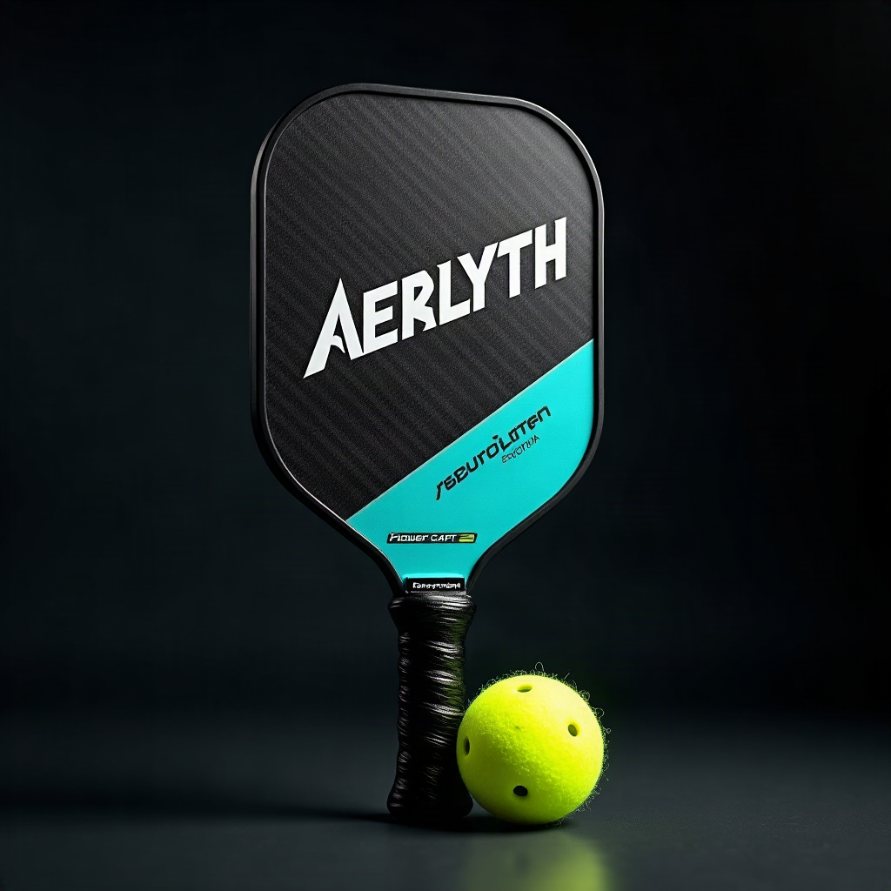

The Volley One is Aerlyth’s tournament-spec paddle for players who live at the kitchen line: a raw T700 carbon fiber face with a gritty spin texture over a 16mm polymer honeycomb core, thermoformed into a single sealed unibody edge. At 7.9 oz with a balanced sweet spot and vibration-damped handle, it turns fast hands into faster put-aways — control on the dink, pop on the counter.